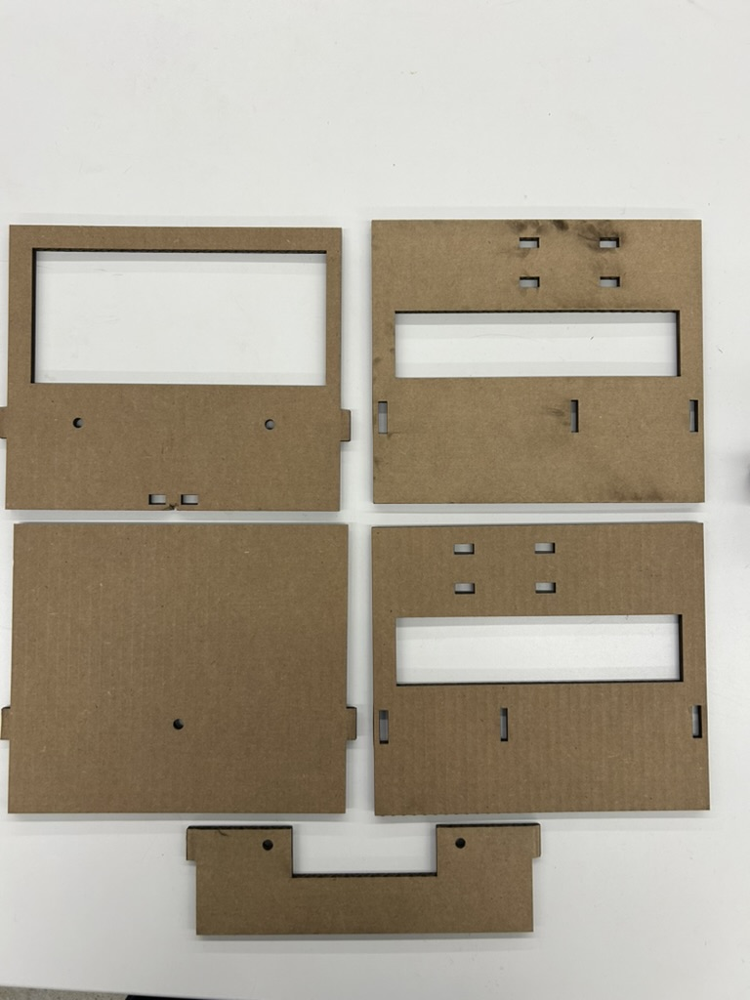
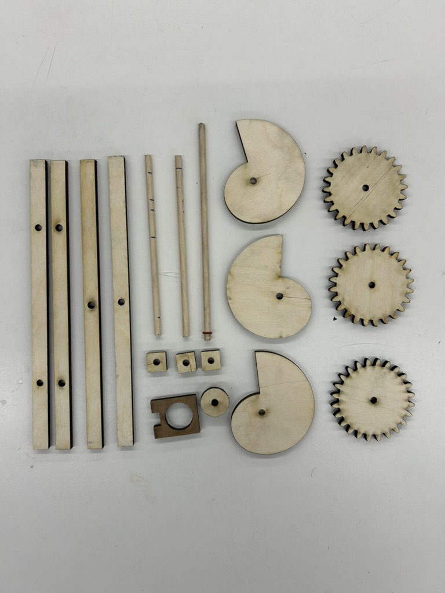
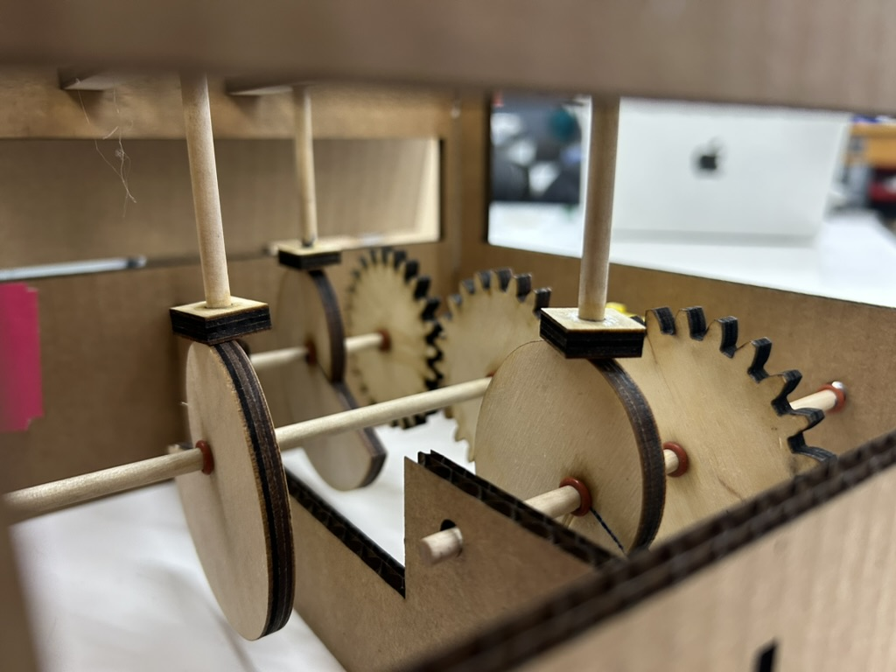
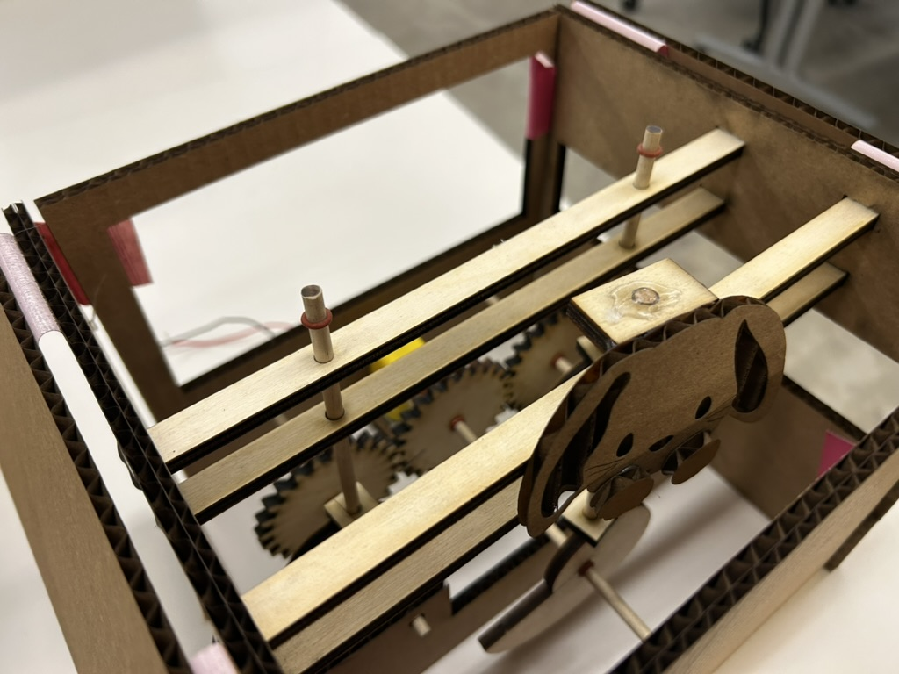
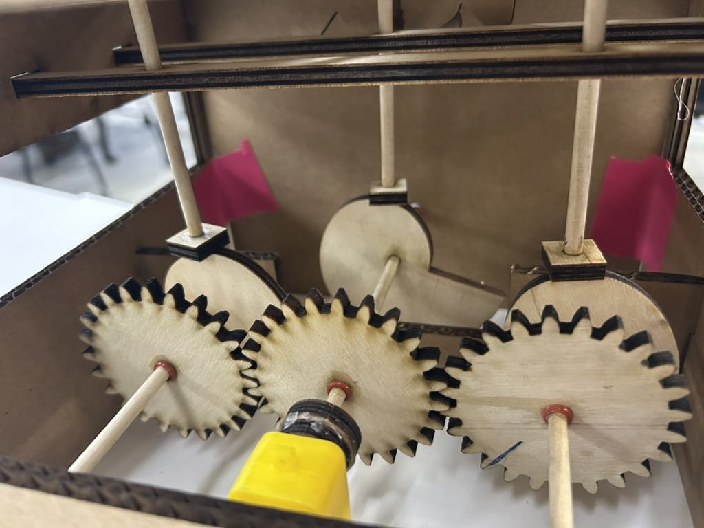
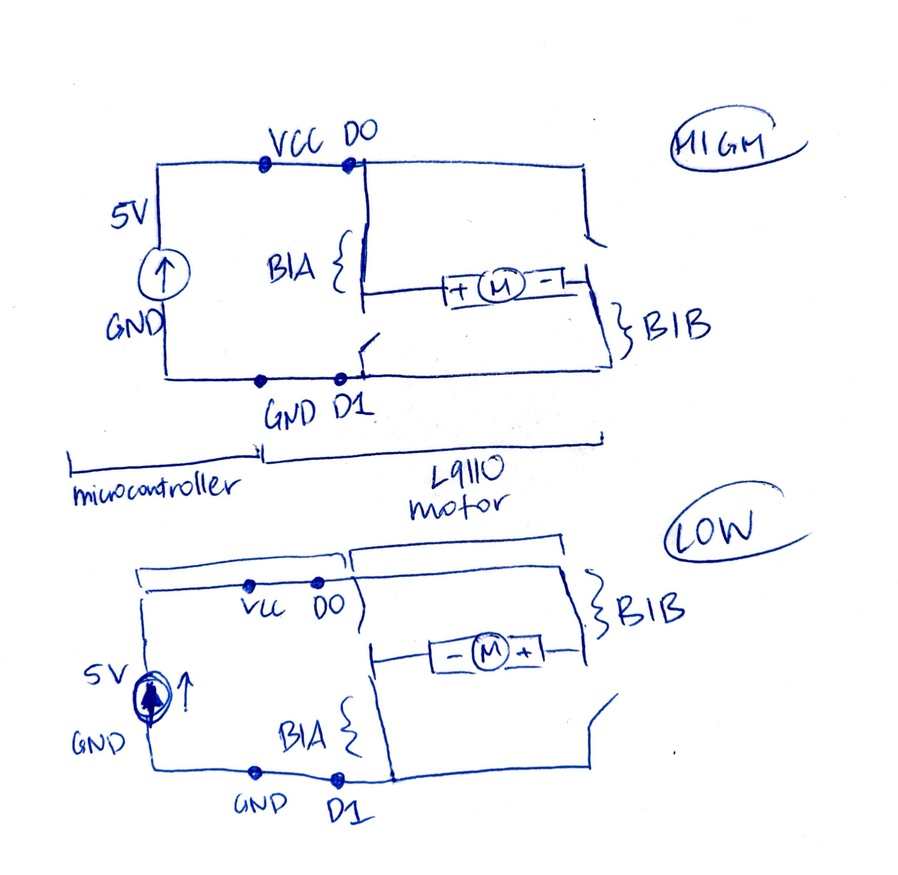

<div class="textcontainer">
<p class="margin"> </p>
<h3>Week 4: Microcontroller Programming</h3>
This week I updated my kinetic sculpture from last week and also updated it with the microcontroller programming.
<p></p>
<h4>Kinetic Sculpture Part 2: Bunny in a Box</h4>
I completely redid my kinetic sculpture from last week to make it better. I renamed it to bunny in a box (after my late realization that my initial idea was misguided on how rabbits typically are taken out of hats). But the actual overall idea is exactly the same.
<p>Things I changed (mostly in alignment with last weeks "future steps" section): </p>
<ul>
<li>Made the box shorter (now that the bunny snail cam will not need to be bigger than the box raising ones)</li>
<li>Added windows on three sides of the box so I could more easily reach inside to make changes but also so you can see the workings of the movements</li>
<li>Made all the inner workings out of wood for extra sturdiness</li>
<li>Significantly reduced any unecessary movement of the gears and sticks using exact placements of stoppers and tighter holes in the stability rods</li>
<li>**MOST IMPORTANT**: Made much much more precise measurements of the gears and their placement in my box so that they would align well.
For example, this is what my notes looked like for the dowels: "stoppers for outer snails: 140mm dowel, stopper 14 mm in (from big wall) and 9mm in (from half wall). put center snails exactly 100m off from big wall (so stopper at 97 and 103 from big)."
</li>
<li>Added the bunny! Note that the dowels that go up and down actually spin too (despite their being attached to squares and being as centered as possible on the snail cams) so I made the bunny bigger so that it couldn't rise on top of the stability rods and spin to face the wrong way. The video below shows the issue.</li>
</ul>
<video width="340" height="480" controls>
<source src="bunn_spinning.mov" type="video/mp4">
</video>
<p>Resources that I used in the process:</p>
<ul>
<li><a href="https://www.youtube.com/watch?v=DdCMjsYvVTc">Spur gear tutorial</a></li>
<li><a href="https://www.google.com/search?q=yellow+motor+dimensions&oq=yellow+motor+dimensions&gs_lcrp=EgZjaHJvbWUyCQgAEEUYORiABDIICAEQABgWGB4yCAgCEAAYFhgeMggIAxAAGBYYHjIICAQQABgWGB4yCAgFEAAYFhgeMggIBhAAGBYYHjIICAcQABgWGB4yDQgIEAAYhgMYgAQYigUyDQgJEAAYhgMYgAQYigXSAQcyMDJqMGo3qAIAsAIA&sourceid=chrome&ie=UTF-8#sv=CAMSZxowKg5LWkYzRDFmSjFGX2NDTTIOS1pGM0QxZkoxRl9jQ006Dnh0YUNRQ1c4cGFYRmpNIAQqLwobX1FvV1RhWXFCREotSXB0UVA4X3ZIOFE4XzQ5Eg5LWkYzRDFmSjFGX2NDTRgAMAEYByCX8crkCzACSggQAhgCIAIoAg ">Yellow motor dimensions</a> (although I didn't find them entirely accurate, so double check by measuring the actual thing)</li>
<li> <a href="bunny_template.jpg" download="bunny_template.jpg">Bunny template </a></li>
</ul>
<p>My materials: </p>
<p> <p></p>
<p></p> </p>
**Note that the caps for the box, the holder for the bunny (to attach it to the dowel), and the bunny are not pictured here.
<p><a href="Bunny in Box.zip" download="Bunny in Box.zip"> Download all the dxf files necessary</a></p>
<p>Photos of the inner workings:</p>
<p> <p></p>
<p></p>
<p></p>
</p>
<p>Final result: shy bunny popping in and out of box!</p>
<video width="650" height="480" controls>
<source src="final_bunny_in_a_box.mov" type="video/mp4">
</video>
<br><br>
<h4>Microcontroller Part</h4>
I used the microcontroller to have control over when the bunny will jump up and down and at what speeds.
I programmed a code that prompts you to type something that the bunny might want and it'll respond with a reaction as well as potential movement.
For example, an excited bunny would jump up and down quickly (I disregarded the box here) and a somewhat excited bunny would not.
So in the serial monitor, it would type: "Present something to the bunny!" and you could type "carrots" so that the bunny responds "yummy!" and jumps at max speed for 3 seconds,
you could type "lettuce" so that the bunny responds "eh okay!" and jumps at a slower speed for only 1.5 seconds, or you could type anything else and the bunny woudn't move and the serial monitor would say "the bunny is not excited by this >:(".
If you plan on using this code, note that I used ports B1A and B1B instead of A1A etc because my L9110 motor driver was too impossible to unscrew on the A1A port to insert a wire. Also note that because I use snail cams, the motor can only turn in one direction, so the code should never switch directions of the motor.
<p>I used <a href="https://www.norwegiancreations.com/2017/12/arduino-tutorial-serial-inputs/">this article</a> for help on using serial moniter texts as inputs.
I used it in this snippet that waits for and reads text in the serial monitor after user is prompted to type (note that <code>waiting=true</code>):</p>
<pre><code> while(waiting){
if(Serial.available()){
String input = Serial.readStringUntil('\n');
excitedBunny(input);
waiting = false;
}
}
</code></pre>
<p>Here is a snippet of the <code>excitedBunny</code> function:</p>
<pre><code>void excitedBunny(String text){
if(text.equals("carrots")){
Serial.println();
Serial.println("Yummy!");
ledcWrite (B1A, 255); //full speed because bunny so excited!
delay(3000); //let it run for 3 seconds
ledcWrite(B1A, 0); //turn off
}
...
}
</code></pre>
<p><a href="bunny_code/bunny_code.ino" download="bunny_code.ino"> Download the Arduino code</a></p>
<p>Video of the microcontroller in action (use sound to hear what's actually happening):</p>
<video width="650" height="410" controls>
<source src="microcontroller_in_action.mov" type="video/mp4">
</video>
<p>Here is a drawing of the circuit (with HIGH vs LOW modes):</p>
<p></p>
</div>